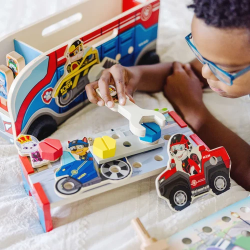
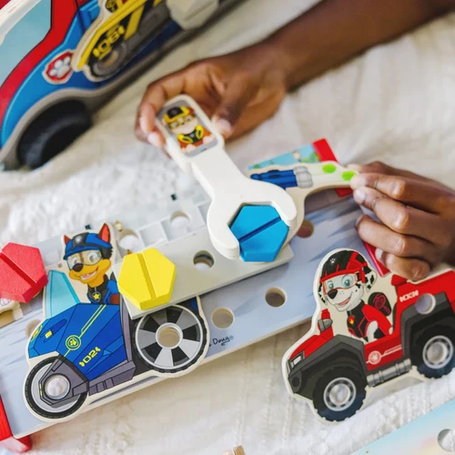
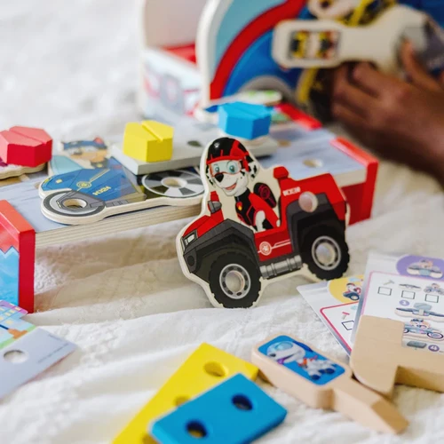
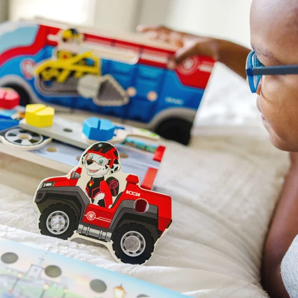
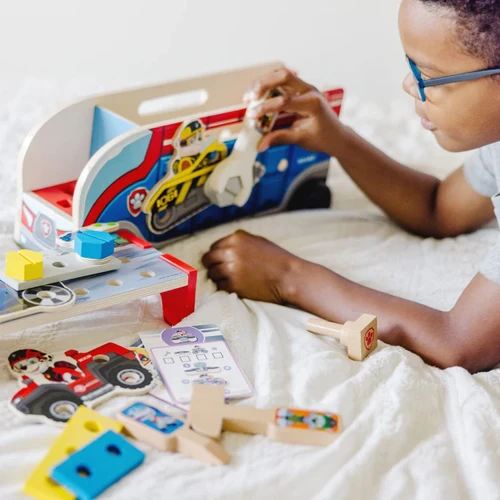
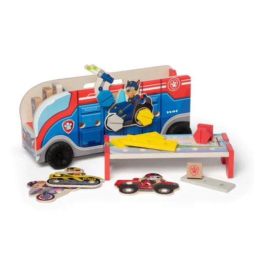
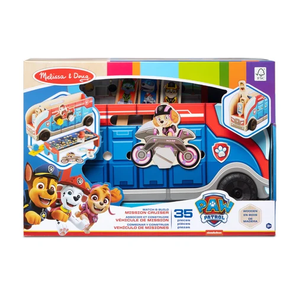

Paw Patrol Match and Build Mission Cruiser
Paw Patrol and Blue Clues
R1 000Match, build, and play with PAW Patrol™ by using wooden character tools and hardware to piece together projects – match assembly cards, attach to scene cards, or create unique projectsIncludes a wooden cruiser with removable workbench, wooden tools and hardware, 7 colorful building panels, 10 PAW Patrol™ panels, 4 double-sided activity cardsPieces attach to each other, the sides of the cruiser, and the workbench; all pieces store in the cruiser for easy cleanupPAW Patrol™ is always ready to help, inspiring preschoolers with a blend of teamwork, adventure, and humor as they develop social, emotional, and developmental skills through playMakes a great gift for preschoolers, ages 3 to 5, for hands-on, screen-free playItem # 33333
Enquire about this product







Paw Patrol Match and Build Mission Cruiser at Kids Corner KZN
Paw Patrol Match and Build Mission Cruiser is part of our Paw Patrol and Blue Clues collection. Kids Corner KZN stocks toys for learning, pretend play, creative play, gifting and everyday childhood discovery in South Africa.
Browse more Paw Patrol and Blue Clues toys